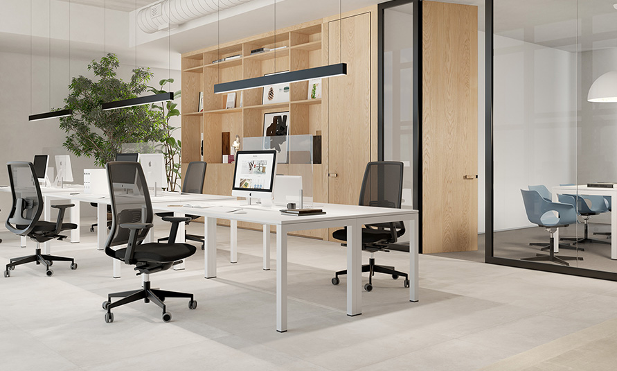

Happiness&Co es una empresa joven y dinámica que se dedicada, en cuerpo y alma, al mundo del ocio. Perdidos entre la inmensa marea de actividades culturales que existen cada día en nuestra ciudad, nos dimos cuenta de que hacía falta buscar un poco de orden y estructura en este inmenso océano de posibilidades. Y así surgió HAPPINESS&Co: una agenda cultural que intenta recopilar y organizar todos los eventos culturales, de cualquier tipo, que tienen lugar en nuestra localidad e inmediaciones.
Música, teatro, exposiciones… Todo tiene cabida en nuestra agenda. Así que… ¡Bienvenidos a HAPPINESS&Co!

Nuestro equipo está formado por apasionados de la cultura y la tecnología, comprometidos con ofrecerte la mejor experiencia posible.

Cargo: CEO
Visionario emprendedor y apasionado por la cultura, Iván Jonas es el impulsor detrás de Happiness&Co, una plataforma innovadora que conecta a las personas con experiencias memorables en Gijón. Con una mezcla de creatividad y mentalidad estratégica, ha transformado su amor por los eventos culturales en un negocio próspero que celebra la vida local.

Cargo: Community Manager
Alma es el corazón digital de Happiness&Co. Con su creatividad contagiosa y su instinto para las redes sociales, transforma cada evento en una experiencia compartida. Su magia: hacer que la comunidad vibre con la cultura de Gijón antes, durante y después de cada plan.

Cargo: Programador
Pablo mas conocido como El Vagabundo es el arquitecto digital detrás de Happiness&Co. Con su expertise certificado por Google y su código impecable, convierte ideas en experiencias web fluidas. Domina tanto el front-end como el back-end, pero su verdadera pasión es crear soluciones que simplifiquen la vida de los usuarios.